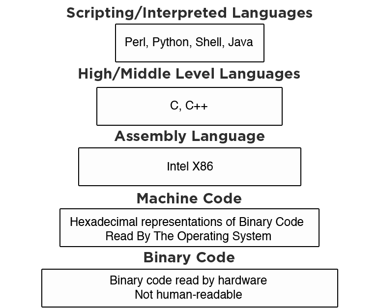

Introduction to
Programming Concepts
...for true beginners!
Slides: http://gdila.org/programming
Welcome!
Girl Develop It is here to provide affordable and accessible programs to learn software through mentorship and hands-on instruction.
Some “rules”
- We are here for you!
- Every question is important
- Help each other
- Have fun
What we’ll cover today
- What is a computer program?
- Variables
- Memory and storage
- Logical operators
- Conditional statements
- Loops
- Comments
Computer Programs
- Computer programs are everywhere.
- They run parts of your car
- They let you check your email on your phone
- They comb through millions of results to match your search terms on the web
But how do you go from an idea to a computer program? And what is a computer program?
What is code?
Turns out, you’re not the only person to wonder this.
Paul Ford wrote a 38,000-word essay called “What is code” that was published on June 11, 2015 in Bloomsburg Business Week, and it captured the attention of many.
What is a Computer Program?
At its core, a computer program is a way of getting something done.
One of the ways to accomplish “getting something done” is a list of instructions that tells the computer exactly what to do and allows interaction with human beings.
Those instructions have to be written in a “language” that the computer can understand.
Computer Programs
Computers don’t understand things the same way humans do. Words and symbols that make sense to human eyes need to be translated down to binary for the computer to understand.
Binary is a system of expressing everything using only 1s and 0s.
For example, in ASCII (one system of encoding in binary), the lower case letter ‘a’ is represented as ‘1100001’.
Computer Languages
From human-readable languages to binary:
Image credit: blog.malwarebytes.org/intelligence/2012/09/so-you-want-to-be-a-malware-analyst/
Computer Programs
One can draw an analogy from a computer to the human body, and from coders to scientists!
- Programmers who work with high-level languages treat computers the way a primary care physician looks at your body. They take a holistic approach to understanding how your organs work together.
- Programmers who work with low-level languages treat computers the way a researcher might investigate a disease in your body. They may need to understand specifics of how parts of your cells work in order to understand how they’re malfunctioning.
Programming Languages
So which human-readable programming language do you choose to use?
It depends on the task you’re trying to accomplish!
Different languages are designed to do different things.
Programming Languages
For example:
- To develop websites, you might use HTML, JavaScript, Python, Java, PHP.
- To create databases and move information in and out of them, you might use MySQL, SQL, Dbase.
- To write applications like Microsoft Word or Adobe Acrobat, you might use C++, Java, Visual Basic
- To write apps for smart phones, you might use Java, Swift
Computers are dumb
- Computers can only do what they have instructions for — and they take those instructions VERY literally.
- As a result, you have to tell them every single thing you want them to do and every single thing to take into consideration.
- If you leave any instructions out (or put them in the “wrong” order), the results might not be what you expect.
Demonstration
I need a volunteer…
PEBKAC
Problem Exists Between Keyboard And Chair
In other words, user error.
Remember, when you’re writing a program and the computer is executing it, the computer is only doing what you told it to do. If it’s not working the way you expect, look for an error in your program.
Hello, World!
Just like English has the concepts of vocabulary and grammar, so do computer languages.
In computer programming, the syntax of a computer language is what defines if the combination of letters and symbols used are considered a valid construction in that language.
Hello, World!
When you’re first playing around and learning the syntax of a new computer language, one of the most common first exercises is called "Hello, World!".
The "Hello, World!" program is one that outputs the text "Hello, World!" on the screen for the user.
This task is usually relatively simple to accomplish in most programming languages, so it’s a good warm-up exercise.
Hello, World!
There are many, many, many examples in many, many, many languages.
Let’s Develop It!
We’re going to use a website called repl.it to try out "Hello, World!" in a language or two.
Choose a language and paste in the hello world code from the Hello World collection.
Click the Run button to see the program run.
Getting Started
Once you have a project and a language, you’ll want to program your project in that language.
Let’s talk about some of the basic foundational building blocks of all programming languages.
Keep in mind that each language may have a different syntax for expressing these concepts, but the underlying concepts will be the same through them all.
Programming structures
- No matter what programming language you use, the structures that are available are usually fairly similar.
- Variables
- Logical structures:
- Conditional statements
- Loops
Variables
- A variable is a storage container for information.
- A variable has a name that you use to refer to it, and a value, which is the information it contains.
- For example:
age = 28color = blue
Variable IRL
You use a unique account number to identify yourself with your bank.
Variables
- There are different types of variables based on the information that you want to store.
Integers and Floats
- Integer variables are used to store integers (0 as well as positive and negative whole numbers).
- Float variables are used to store numbers with fractional values (that is, containing decimal places).
- For example, consider shopping on Amazon:
- The number of books you can order is stored as an integer (e.g., 2)
- The price of the books is stored as a float (e.g., 15.99)
- Not every programming language makes a distinction between these two, but it’s good to be aware of.
Strings
- String variables are used to store text. A string is made up of characters like letters, numbers, and symbols.
- For example, on Amazon.com:
- In your profile, information like your name, address, state, and city are stored as strings.
- An item’s description is stored as a string
- Usually when you’re creating a string variable, you will need to surround the value with either single or double quotation marks (either
'or") to specify the start and end of the string. (Remember how"Hello, World!"had quotes?)
Numbers as Strings
- You can store a number as a string variable, but then you typically can’t use it in any mathematical calculations.
- For example, phone numbers are integers, but you would never use them in a mathematical calculation, so you could store them either way.
- As another example, consider postal codes. If you store them as integers, then you can only support postal codes from the USA! Other countries use postal codes with letters in them (e.g., BL1 1AD is in the UK).
Boolean Variables
- Boolean variables are used to store the value
TRUEorFALSE(yes or no). - Booleans are most frequently used to control whether certain functionality is enabled or disabled.
- For example, back on Amazon.com, if your login credentials validate, this may be stored as a
"true"(yes). As a result, your account information displays, your cart is populated, etc.
Questions?
Any unanswered questions about variables or types of variables?
Storage and Memory
You may be asking yourself how exactly the computer “stores” these variables. As anyone who’s shopped for a computer knows, there are a lot of terms when it comes to computer storage and memory. Let’s briefly touch on them.
Memory
RAM or Random Access Memory is where the computer does its “thinking”.
This is where programs temporarily store data like variables while executing programs. Data in RAM is frequently overwritten and is destroyed when you turn off your computer.
Memory
ROM or Read-Only Memory is for the most part not editable.
It’s used by the computer to store important pieces of data when switched on, like data about the operating system.
Storage
Storage a more permanent type of memory. The computer user can utilize it to keep data around even after the computer is turned off.
Examples include the hard drive on the computer, a thumb drive, or an external hard drive.
Questions?
Any unanswered questions about memory and storage?
Operators
Now that we have variables storing data for us, what can we do with them?
We use operators to compare, combine, or evaluate combinations of variables in order to produce some desired output. We could then store this output in another variable, if we wanted!
Operators
Some examples of operators:
| Operator | Meaning |
|---|---|
= |
equal to |
!= |
not equal to |
> |
greater than |
< |
less than |
>= |
greater than or equal to |
<= |
less than or equal to |
&&* |
and |
||* |
or |
* These operators have different characters in different languages.
Questions?
Any unanswered questions about operators?
Logical structures
- Logical structures provide the framework for using that data to “get stuff done”.
- If you understand the concepts, you can learn how to represent them in most programming languages.
Conditional Statements
If this, then that…
- Conditional statements evaluate a condition and take actions based on the result.
- If the given condition is
true, Then the computer will do the actions you specify in theifclause. (In some languages, the wordthenis implied.) - Else (otherwise), if the given condition is
false, the computer will do the actions you specify in theelseclause.
Conditional Examples
Another Amazon example…
IFyou’re logged in, show your name and shopping cart contents.ELSEshow a link to the login page.IFyou’re an Amazon Prime member, you get free shipping.ELSEyou have to pay for shipping!
Let’s Develop It!
Part 1
Let’s practice conditional statements in Ruby.
- Go back to repl.it and choose Ruby as the language.
- Copy or type the following into the left-hand side and click the Run button:
cart_total = 8
if cart_total > 2
print "You get free shipping!"
end- Change the numbers and see what happens.
- Change the operators (greater than, less than, etc.) and see what happens
Let’s Develop It!
Part 2
- Now let’s make this a little more complicated and add an
elsestatement after theifstatement.
cart_total = 8
if cart_total > 2
print "You get free shipping!"
else
print "You'll have to pay for shipping."
end- Change the numbers and see what happens.
- Change the operators (greater than, less than, etc.)
- Change the string outputs.
Questions?
Any unanswered questions about conditional statements?
Loops
A loop is a list of instructions that repeats until a certain condition is met.
- For example…
- In real life: For each dirty dish in the sink, wash it, rinse it, dry it, and put it away.
- On eBay: Allow bids on this auction until the auction timer hits 0.
One reason to use a loop is to reduce the number of lines of code you need to write to accomplish a task.
Why Use Loops?
- Loops are very powerful - they allow us to interact easily with each item in a collection of items.
- Loops reduce the amount of code we have to write.
- If you were stuck using only conditional statements, you might have to write hundres of lines of code to interact with a collection items.
Why Use Loops?
I need 5 volunteers…
Infinite Loops
Important: Beware the infinte loop!
- An infinite loop is a loop that will never meet the condition to stop. For example, if you’re waiting for a variable (like that eBay timer) to reach 0, but the timer variable keeps increasing instead of decreasing, the loop will continue forever!
- Your program will keep running until it uses up all your computer’s RAM memory. This is BAD!
Types of Loops
There are two kinds of loops:
whileloopsforloops
While Loops
A while loop allows code to be executed repeatedly based on a given condition.
Often based on the value of a variable.
Usually your code will need to change the variable within the body of the loop.
Example: While it’s raining, bring an umbrella.
While Loop IRL
You’re expecting and important email. As long as you haven’t received it yet, you keep refreshing your inbox.
Let’s Develop It!
- Head back to repl.it and selection Python as the language. (Not Python 3)
- Copy or type the following into the left-hand side and click the Run button:
number_of_bottles = 99
while number_of_bottles > 0:
print number_of_bottles
print ' bottles of beer on the wall'
number_of_bottles = number_of_bottles - 1
print 'no more bottles of beer!'- Change the numbers to see what happens.
- Change the operators (greater than, less than, etc.)
- Change the string statements.
Be careful not to create an infinite loop!
If you do, you may need to force-quit your browser!
For Loops
For loops are similar to while loops. They just have a different syntax.
In a for loop, you set up the conditional and increment or decrement your variable in the same line.
Example: For each book in the list, read it!
For Loop IRL
You decide to do a pushup challenge every day for 100 days.
Let’s Develop It!
- Let’s re-do the last exercise, but using a
forloop this time. - Head back to repl.it and selection Python as the language. (Not Python 3)
for number_of_bottles in range(99, 0, -1):
print number_of_bottles
print ' bottles of beer on the wall'
print 'no more bottles of beer!'Questions?
Any unanswered questions about loops?
Comments
One final thing to keep in mind is that it’s good practice to leave comments in your code. Comments are not executed by the program. They’re just there for you to read.
Comments should explain why your code is doing what it’s doing.
Comments
The syntax for comments varies from language to language, but here are some common ways to create comments:
# The following code prints something
print 'hello, world!';
// And this code prints something too!
print 'hello, world!'
/* And this bit of code also prints something */
print 'hello, world!'Why leave comments?
- Teams! When you’re working a team, comments in the code help your teammates easily identify what bits of code are doing.
- Explain oddities. Sometimes, you have to add a bit of code that seems odd to solve a problem. Leaving a comment explains why the code is there so it doesn’t accidentally get changed.
- Yourself! You’ll thank your past self a million times over when you return to code you wrote 6 months or 2 years ago and need to update or change something if you’ve left nice comments explaining your code.
Questions?
Any unanswered questions about comments?
What we learned today
- What is a computer program?
- Variables
- Memory and storage
- Logical operators
- Conditional statements
- Loops
- Comments
Coding Resources & Books
- Code Year:www.codecademy.com/tracks/code-year
- Codecademy: www.codecademy.com
- Coursera: www.coursera.org
- Kahn Academy: www.khanacademy.org
- Skillcrush: www.skillcrush.com
- Udacity: www.udacity.com
- Udemy: www.udemy.com
- And of course, GDI Los Angeles
- Learn to Program, by Chris Pine
- Everyday Scripting in Ruby, by Brian Marick
Thank you!
Thank you for supporting Girl Develop It!
We strive to make every class better than the last. To help us, please complete this survey. It’s anonymous and your comments will only be seen by the organizers.